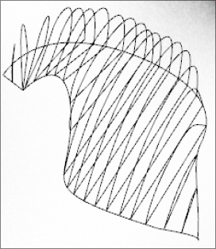
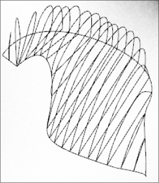

Project Context
The goal of this project is to design a walkway pavilion that would be located in Holland Park in Surrey. This pavilion is designed with the park visitors experience in mind were strolling through or relaxing in a public space is a comfortable and relaxing.
Design Research
We researched existing pavilions to find inspiration and analyzed features of spatial design such as shapes and material design. We chose Zaha Hadid’s Burnham Pavilion.
We really appreciated her design with the natural shapes and progression in curves.
The Process
As a team we all brainstormed possible designs and shapes that our Pavilion by making quick sketches. I used modeling clay for a quick and more tactile feel for designing things with spatial thinking in mind.
My Role
I took our chosen sketches and converted it to a 3D model using Rhino. Upon converting the sketches into 3D I made design changes that incorporated Zaha Hadid’s natural shapes by contouring the curves in a fashion that will be able to accommodate for park participants traversal and enjoyment.
 

I then modeled the pavilion by applying a parametric design using grasshopper.
Reflection
This project was very gratifying to accomplish. This project has taught me how designs can be pulled from inspiration from aspects of life everywhere. A skill that I rely on heavily when tackling design solutions.